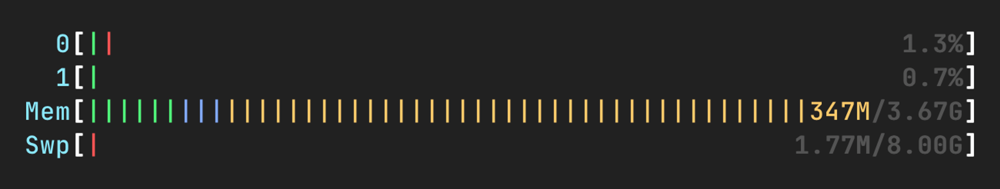
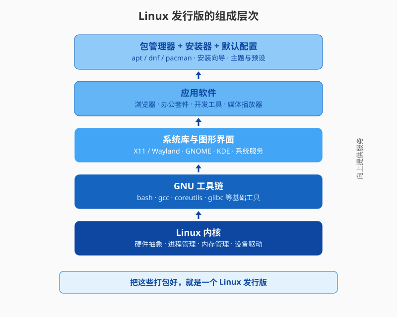
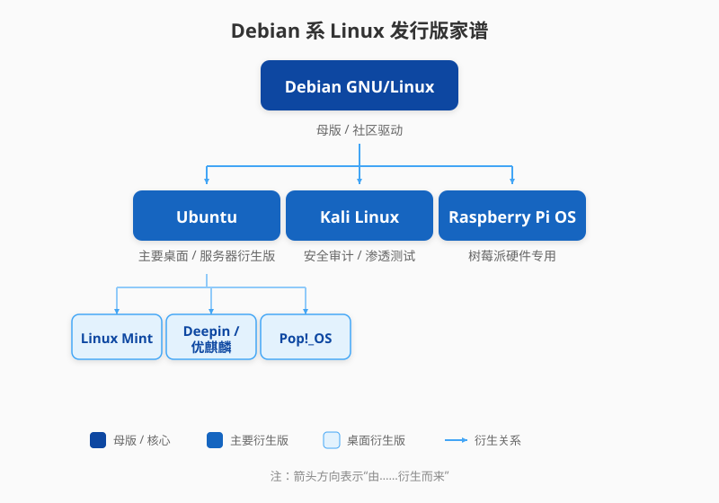
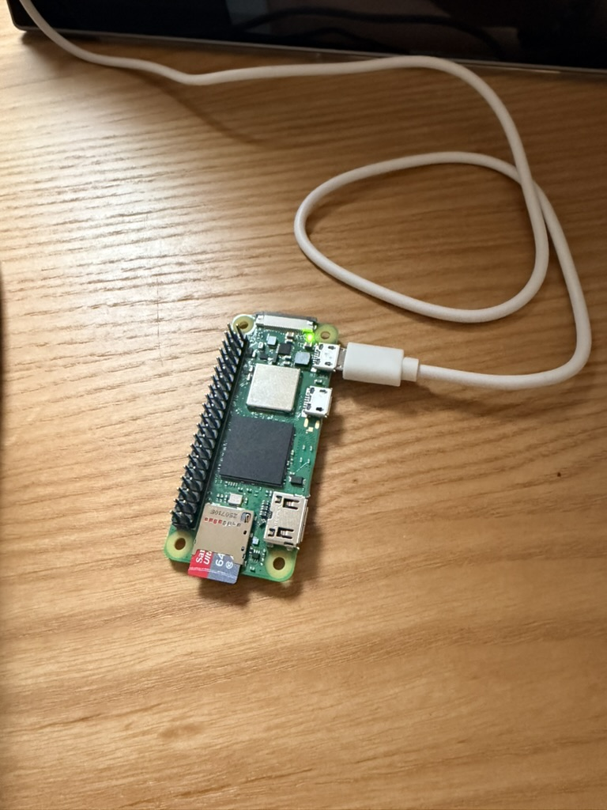
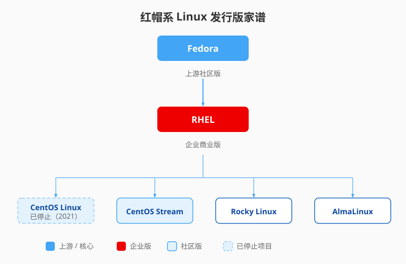
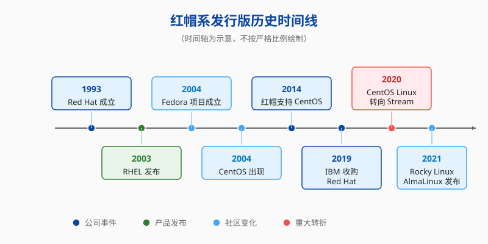

第一章 Linux的基础知识
Unix与Linux
虽然这本书是讲Linux的，但是故事却要从Unix这个操作系统开始讲起，甚至从Unix操作系统之前的一款已经淹没在历史长河中的操作系统讲起。
20世纪60年代，贝尔实验室（Bell Labs）与麻省理工学院（MIT）以及通用电气公司（GE）合作开发了一个名为Multics（Multiplexed Information and Computing Service）的操作系统。这是一款为了多用户和多任务操作场景而设计的操作系统，但是最终Multics因为设计过于复杂、资源消耗过于巨大，项目在1969年被放弃。
有两位大神，肯·汤普森（Ken Thompson）和丹尼斯·里奇（Dennis Ritchie），那时正在贝尔实验室工作。据网上查询到的信息，肯·汤普森和丹尼斯·里奇分别于1966年和1967年加入贝尔实验室，他们大概率参与了Multics的开发工作，至少他们都在工作中感到Multics无法满足他们的需求。
当时，肯·汤普森正在开发一款名为“星际旅行”（Space Travel）的游戏。这款游戏模拟了太阳系的旅行，玩家可以控制飞船在二维比例模型的太阳系中飞行，尝试登陆行星和卫星。
“星际旅行”游戏最初在Multics上开发，后来移植到GECOS操作系统，运行在GE-635计算机上。但是游戏的开发成本太贵了，每次运行游戏，需要消耗公司大概50~75美元的内部费用，这还是上世纪60年代的美元。巧的是，汤普森偶然发现了一台闲置的PDP-7计算机，他决定将游戏移植到这台机器上。
将游戏移植到PDP-7的过程需要一个适合的操作系统，因为PDP-7没有现成的系统可以支持游戏的运行，汤普森与里奇就从头开发了一个新的操作系统，后来就成为了Unix操作系统的核心。
汤普森和里奇使用PDP-7计算机的硬件资源，开发了一个包含文件系统、进程管理和简单命令解释器的系统。这个系统最初被称为UNICS（Uniplexed Information and Computing System）。
记得他们参与但最终废弃的项目的名字吗？Multics，全称是Multiplexed Information and Computing Service，UNICS的名字就是对这个项目的戏谑，Unix最初的单任务设计理念，与 Multics 的多任务但有些失败的特性形成鲜明对比。
UNICS的开发始于1969年，大约1970年，UNICS的名字被简化为Unix，具体是谁提出了这个简化版本的名称尚无定论，但也许与AT&T律师的要求有关，希望名字更简洁或更易于注册。到了1973年，Unix操作系统的第三个版本使用C语言重写，这使得Unix的性能大幅度提高，也能够便捷地移植到性能更高的计算机上。我们都耳熟能详的C语言，正是丹尼斯·里奇所发明的。
在那个时代，Unix有着许多领先的概念和实现。Unix的设计哲学强调简单性、模块化和可扩展性，提出了“一切皆文件”的概念，并通过管道和进程等机制实现了模块化设计。这些理念很大程度上推动了操作系统的商业化。早期，Unix的源代码被广泛分发给学术机构、研究人员和企业，例如Unix源码曾分发给加州大学伯克利分校，并促成了BSD（Berkeley Software Distribution）这一发行版的出现；DEC、HP、IBM 等公司也开发了自己的 Unix 商业版本（如 DEC's ULTRIX、IBM's AIX），Unix的生态系统日益壮大起来，但同时也埋下了许多隐患。
时间很快到了80年代末、90年代初，Unix的版权问题开始显现。AT&T公司的子公司Unix System Laboratories（USL）声称BSD的代码侵犯了Unix的版权、泄露了商业秘密，并滥用了商标，直至1992年，USL公司发起了诉讼。这一期间，BSD以及Unix内核的发展明显放缓，恰巧与此同时，有一位年轻人正在寻找一个Unix或者Unix-like内核，他就是我们故事的主角，林纳斯·托瓦兹（Linus Torvalds），Linux的作者。
1991年，林纳斯正在赫尔辛基大学读二年级，他那时在使用一款类Unix的操作系统——Minix。Minix是一款为教学设计的操作系统，代码简洁但功能有限。它的设计目标是让学生理解操作系统原理，而非成为高性能的通用系统。Minix是针对较旧的16位硬件设计的，对其他硬件架构的支持非常有限；最重要的是，Minix当时不是免费软件，修改和分发受到限制，而林纳斯希望创建一个自由的操作系统。
Unix深陷版权争议，Minix也不能满足林纳斯的需求，于是他打算自己开发一款操作系统内核。在1991年8月25日，林纳斯在comp.os.minix新闻组上宣布他的项目：“我正在开发一个类似Minix的操作系统，目标是让它运行在386架构的PC上”。这个操作系统就是Linux。可能听起来有些快得惊人，在不到一个月后的9月17日，Linux的0.01版本就发布了。
最初，Linux是林纳斯的个人项目，之后他公开了源代码，并且邀请其他开发者参与改进，这很快吸引了全球的众多开发者参与其中。到了1993年，已经有超过100名开发者参与Linux内核的开发。听起来有点少是不是？想想看，那可是互联网还不发达的1993年。时至今日，Linux内核的版本号已经到了6.x，每个版本所记录的开发者人数大约在2000人左右，并且过去几年还在持续增加。截至2026年，Linux的贡献者已经超过了25000人。
Linux的内核采用GPLv2开源许可证，确保任何人都可以自由使用、修改和分发代码。这种开源模式使Linux能够快速迭代，适应各种硬件和应用场景。
正如林纳斯所需要的，Linux是一款Unix-like的操作系统内核，继承了Unix的许多优秀特性和设计哲学。但值得一提的是，Unix与Linux没有父子关系，Linux中并不包含Unix的代码。无论是AT&T还是BSD的Unix代码都是有专有的，受版权保护，根据Linux的开源协议，是不能使用Unix的代码的。在之后的内容中，我们会发现，Linux有很多操作和设计就像是直接从Unix拷贝过来一样，但那都是为了让用户能够从Unix无缝迁移到Linux操作系统上，底层的代码其实都是重写的。
Linux操作系统深受市场和用户的认可。根据2024年11月的报告，其全球服务器操作系统市场份额约为62.7%。对于特定的web服务器，Linux的表现尤为突出，占全球前100万个web服务器的96.3%。在云计算领域，Linux操作系统也被广泛使用，大约占全球云服务器操作系统市场份额的90%。
从总设备数上来看，Linux不仅数量超过了Unix，甚至也超过了Windows，只是在我们日常的PC上，使用Linux操作系统的还不那么多，所以我们对Linux不那么熟悉。但现在这个互联网和人工智能的世界，网络的背后是无数的Linux服务器支撑起来的。
有一个笑话是这样讲的，火星是这个宇宙中第二个Linux设备数超过Windows的行星。
如果你想更深入了解 Unix、GNU 与 Linux 之间的历史纠葛，可以延伸阅读Unix 战争与 BSD 诉讼案和GNU Hurd：那个没做成的内核；至于火星笑话背后的真实故事，则在Linux 在火星里有更具体的介绍。
Linux操作系统的用途
Linux操作系统在一些特定领域中被广泛使用，下面举几个例子：
服务器与云计算。在数据中心以及云服务这两个平台上，Linux操作系统的服务器可以算得上是它们的支柱，支撑起了全球互联网的基础设施。比如，谷歌的Google Cloud Compute Engine（GCE）和Amazon Web Services（AWS）的绝大部分服务器，都使用Linux作为其操作系统。国内的云服务厂商，比如阿里云、腾讯云等等，也都是跑在Linux上的。像阿里云，还有其自己的Linux操作系统发行版——Alibaba Cloud Linux。
嵌入式设备与IoT（物联网）。嵌入式系统是指集成在更大设备中的专用计算机系统，通常体积小、功耗低，专注于单一或有限任务。它往往不像通用 PC 那样多功能，而是“隐形英雄”，默默支撑设备的核心逻辑。IoT则是将物理设备通过互联网连接起来，实现数据采集、传输和分析的生态系统。这些场景资源高度受限，硬件数量也比较多，Linux操作系统也成为了这些领域的首选。
科学计算与高性能计算。为了支持大规模并行计算的需求，几乎所有的超级计算机都基于Linux操作系统。我们未来将要接触的大规模AI训练以及推理的多种场景，也都将跑在Linux的计算集群上。
安卓系统。准确来说，安卓并不是一个完整的Linux操作系统，它是基于Linux内核构建的移动OS。安卓系统由谷歌公司开发，自2008年推出以来，覆盖了大约80%的智能手机市场。关于 Android 和 Linux 的关系究竟该怎么理解，可以参考延伸阅读Android 是不是 Linux？。
上面的例子可以看出Linux操作系统有多么地受人喜爱，那么接下来我们聊一聊到底为什么呢？
Linux 在服务器、云计算和嵌入式等场景中大受欢迎，归根结底是成本低、源码开放、可控性、系统本身占用资源少。这些优势与 Windows 相比会更加明显，下一节我们就从对比的角度具体展开。
Linux 与 Windows：为什么要用 Linux？
很多刚接触 Linux 的同学会问：既然 Windows 这么流行，为什么还要再学一个系统？更有甚者，会把 Linux 和 Windows 当成“非此即彼”的对手。其实它们更像是两把不同的锤子：一个顺手钉钉子，一个适合砸墙。
各自的主战场
Windows 长期占据个人电脑和办公桌面。你写实验报告用的 Word、做 PPT 用的 PowerPoint、和同学联机玩的游戏、许多设计类软件，大概率都运行在 Windows 上。它的硬件兼容性和图形界面非常成熟，普通用户插上鼠标就能用。
Linux 的主战场则在服务器、云计算、嵌入式设备和科研计算。你训练深度学习模型时连接的远程 GPU 服务器、支撑网站的后台机房、跑在高性能计算中心的大规模模拟，底层几乎都是 Linux。这不是因为 Linux “更酷”，而是因为这些场景需要稳定、可批量部署、能 7×24 小时运行。
Linux 省下的不只是钱
成本是最直观的差距。Windows Server 按处理器核心或虚拟机数量收取许可费用，规模越大成本越高；而 Linux 可以免费下载、安装和部署，不需要为每台服务器购买许可证。对于一个拥有几百台机器的机房来说，这笔差额足够添置不少新设备。
更深层的原因是可控性。Linux 内核和绝大多数系统工具都是开源的，任何人都可以阅读、修改和审计代码；Windows 的核心代码闭源，排错时只能依赖官方文档和补丁。如果某个科研任务需要把系统裁剪到最小，只保留必要的驱动和服务，Linux 可以做到；如果服务器半夜出现怪问题，工程师能一路追到内核日志甚至源码。
开发者与运维生态也偏向 Linux。命令行、Shell 脚本、Docker、Kubernetes、CI/CD 流水线这些现代科研和工程工具，最初都是在 Linux 上生长起来的。用 Windows 也能做，但很多时候像是在给工具链“打补丁”：装好 WSL（Windows Subsystem for Linux，可在 Windows 内运行 Linux 环境）、配好环境、再处理路径差异，才能跑通一段在 Linux 服务器上原本就正常的代码。
此外，Linux 的资源占用通常更低。同样一台服务器，运行 Linux 比运行 Windows Server 能留出更多 CPU 和内存给实际任务，也就意味着同样的硬件能承载更多服务。对 AI 训练、分子动力学模拟这些“吃资源”的工作来说，省下来的每一分算力都很实在。

Windows 仍然是桌面与创意的主场
这并不意味着 Windows 落后。在需要专业图形设计、工程制图、复杂 Excel 宏、工业控制软件或大型游戏的场景里，Windows 仍然是首选。很多学校的机房、企业的财务系统、医院的影像设备，依赖的是只有 Windows 版本的专业软件。
对普通学习者来说，Windows 的图形界面和软件生态也更友好。你不需要记住一长串命令，就能安装软件、浏览网页、处理文档。在“开箱即用”的体验上，Linux 桌面发行版近年来进步很快，但在某些硬件驱动和专有软件支持上仍有差距。
很多人其实两个都用
真正有意思的是，大多数工程师和科研人员并不是“二选一”。他们的日常往往是：笔记本用 Windows 写文档、做汇报，再通过 SSH（一种远程登录协议）远程登录 Linux 服务器跑程序；或者在 Windows 上安装 WSL，让 Linux 命令行和 Windows 图形界面共用同一套文件。
也有人选择双系统启动：开机时切到 Windows 打游戏、做设计，切到 Linux 做开发。虚拟机和云服务器则让这种组合更灵活——本地 Windows 负责交互，远程 Linux 负责计算。
所以，学习 Linux 不是为了抛弃 Windows，而是多获得一种工具。当你需要在服务器上部署一个长期运行的服务、批量处理数据、管理容器集群时，Linux 会成为比 Windows 更自然的选择。
Linux与开源
Linux的成功离不开开源，在20世纪60-70年代，学术界和研究机构普遍以共享源代码为荣，那时候的Unix也是以极低的价格向大学分发的。然而到了80年代，AT&T公司将Unix全面商业化、封闭源码，打破了这种共享传统，也让许多开发者深感不满。
1984年，理查德·斯托曼（Richard Stallman）发起GNU计划，目标是开发一套完全自由的类Unix操作系统。他提出“自由软件”必须满足四项自由：为了任何目的运行软件的自由、研究软件如何工作的自由、再次分发的自由、以及改进并发布改进版本的自由。为了从法律层面上保障这些自由，理查德于1989年发布了GNU General Public License（GPL）这项开源协议，后来在1991年定稿的GPLv2协议成为最重要、名气最大的一版。
1992年，Linux内核正式使用GPLv2许可证，并一直沿用至今。林纳斯选择GPLv2许可证，而不是更宽松的BSD或者MIT许可证，是一个具有深远意义的决定，因为GPLv2有一个重要的传染性条款：任何基于Linux内核的分发版本，只要发布了二进制程序，就必须同时公开对应版本的完整源代码。这一条款从根本上杜绝了内核被单一公司私有化的可能性，确保所有改进最终回流到公共代码库，同时又允许企业自由使用和商业化。
正是在这种许可证的保护下，Linux得以在互联网刚刚兴起的90年代迅速聚集全球开发者。任何人只要有一台上网的电脑，就可以下载源码、编译、发现问题、提交补丁。代码审查和讨论全部通过公开的邮件列表进行，问题暴露得快、修复得也快。这种全新的开发模式后来被总结为“林纳斯定律”：在足够多的眼睛注视下，所有 bug 都是浅显的。
Linux 的崛起反过来也彻底改变了开源的命运。1998 年前后，IBM、Oracle、Intel等巨头先后宣布支持 Linux，Red Hat等公司探索出了“免费软件＋收费支持”的可持续商业模式，开源从学术圈的理想主义走向企业级现实应用。时至今日，Linux内核仍然是全球最大、最活跃的开源项目，每年有超过两千家公司的工程师为它贡献代码，却没有人能将它据为己有。
关于开源运动的完整历史与当代挑战，可以参考延伸阅读——开源：从自由软件运动到人工智能时代；关于开源生态的安全风险，则可以参考延伸阅读——XZ Utils 后门事件。
Linux操作系统的发行版
Linux操作系统的发行版是一段非常有意思的内容，不同于Windows操作系统，Linux操作系统的版本很多，不光是有版本号的迭代更新，还包括有着多种多样的发行版，不同的发行版的使用体验可能天差地别。“发行版”这个名词在Windows里很难找到一个对应的概念，为了讲清楚，我们得再讲一讲前文已经提到的“内核”的概念。
在我们通常谈话或者探讨的时候，我们所说的“Linux”其实指两层含义：
- 狭义的Linux：就是Linux操作系统的内核，它只负责进程管理、内存管理、文件系统、设备驱动、网络栈等最核心的功能。
- 广义的Linux：指以Linux内核为核心，再加上GNU工具链、系统库、图形界面等一大套软件构成的完整操作系统，常被称为GNU/Linux。

在真正能被我们使用的Linux操作系统中，Linux内核是整个操作系统的“大脑和心脏”，它是一个运行在计算机最底层的软件层，负责直接和硬件打交道，同时向上层用户程序提供统一的抽象接口。换句话说，内核是硬件与软件之间的唯一翻译官。
我们能够看到，Linux内核能做的事情重要且专一，就是驱动各种硬件工作，但是并不是我们真正打交道的部分。内核只提供机制，而策略和用户体验就需要借助上层软件才能实现。不同的社区和公司在上层软件的开发和实现各有不同，这就让广义的Linux产生了很多不同的版本，比如Ubuntu、Debian、Fedora、Arch Linux，以及CentOS Stream、Rocky Linux等。这些就是我们所说的发行版。
简单来说，Linux的发行版就是把Linux内核、一整套选好的软件包、统一的包管理工具、安装器、默认配置以及技术支持体系打包成一个可直接安装使用的完整操作系统。
不同发行版背后是不同的社区或公司、不同的价值观：有的追求十年如一日的稳定，有的追求最前沿的新鲜功能；有的面向服务器和数据中心，有的面向桌面和开发者；有的完全由社区自治，有的由商业公司提供支持。正是这种多样性，让Linux世界呈现出百花齐放的景象。
接下来我们介绍几个主流的Linux发行版。
Debian系

在这张家谱的最顶端，就是 Debian 本身。它不像 Ubuntu 那样频繁发布新版本，也不追求最时髦的桌面特效，而是以稳定、自由和社区自治著称。很多衍生版之所以选择基于 Debian，正是看中了它扎实的根基。

Debian系是当今Linux世界真正的“人口第一大族”，根据公开统计，全球公开互联网服务器中约 55%～60% 的机器都直接或间接流淌着Debian的血。它的家族结构非常清晰：只有一个真正的“母版”——Debian GNU/Linux，其余所有成员都是它的直系后代或再衍生。Debian系使用apt包管理工具，使用apt-get命令来安装软件包。现在更推荐使用 apt 命令，它是 apt-get 和 apt-cache 的更易用封装，带有进度条和更友好的输出。
Debian 自身有三个主要分支：Stable（稳定版）、Testing（测试版）和 Unstable（不稳定版，代号 Sid）。Stable 经过长期测试，追求极致稳定，是服务器和生产环境的首选；Testing 是下一版 Stable 的候选池，软件版本较新但稳定性略低；Unstable 则是滚动更新的开发分支，适合愿意尝鲜和参与测试的开发者。Ubuntu 正是基于 Debian 的 Testing 分支进一步打磨而成的。
Debian系中最耀眼也最成功的孩子无疑是 Ubuntu。2004年，南非企业家Mark Shuttleworth创立Canonical公司，以Debian为基础每六个月发布一个新版本。Ubuntu从诞生之日起就成为云服务器、开发者笔记本的首选镜像。截至2026年，Ubuntu 24.04 LTS仍是全球云厂商（AWS、Azure、阿里云、腾讯云、华为云）排名第一的公共镜像。在深度学习领域，Ubuntu也是最受人喜爱的Linux发行版，各种深度学习训练平台开放的系统镜像都是Ubuntu的操作系统，这是深度学习的“炼丹师”们在此轮AI浪潮来临之前就已经积累下来的习惯。
Ubuntu又生出了一大群“孙子辈”桌面发行版，它们几乎都保留了Ubuntu的底层仓库，只在桌面体验上做文章：Linux Mint把Ubuntu默认的GNOME桌面换成更经典的Cinnamon或MATE；中国深度（Deepin）早期完全基于Ubuntu，后来混用了一些自研组件，优麒麟（Ubuntu Kylin）则是Ubuntu官方直接支持的中国社区版。此外，System76 公司推出的 Pop!_OS 也基于 Ubuntu，它在 AI/ML、游戏和科学计算领域非常受欢迎，预装了对 NVIDIA 显卡和深度学习工具链的良好支持。
Kali Linux，这是一个旨在提供安全测试的Linux发行版。它和上面的“孙子辈”不一样，是 Debian 的直系后代，只不过它彻底抛弃了“通用操作系统”的定位，专为渗透测试、安全研究、数字取证和逆向工程而生。一定要注意，千万不能将Kali Linux当作生产服务器用，它默认使用root用户，也就是最高权限，并且关闭了几乎所有的安全加固。
Raspberry Pi OS，这是一个给树莓派设备使用的Linux发行版。早年间，这款Linux发行版名叫Raspbian，2015年由树莓派基金会接手，改名为Raspberry Pi OS。这款发行版也是纯血的Debian系，官方软件仓库大部分都是直接镜像Debian，只有少量树莓派专用软件。

如果说 Debian 系代表了社区自治的民主路线，那么 Red Hat 系则走出了一条商业化、企业化的道路。
Red Hat系
从一顶红帽子说起
如果说Debian系靠的是社区自治的“民主气质”壮大起来，那Red Hat系的故事则更像一部“从校园极客走向企业级Linux帝国”的创业史。Red Hat这个名字的由来本身就带着几分传奇色彩：创始人Marc Ewing在卡内基梅隆大学的Linux机房工作，因为常戴一顶红色的康奈尔大学帽子，很快就被大家称为“那个戴红帽子的人”。后来这顶帽子不仅成了他的个人标签，也成了公司的名字。1993年，Red Hat公司正式成立，从此开启了商业Linux最成功的一段旅程。
RHEL：企业级Linux的标杆
Red Hat Enterprise Linux，简称RHEL，是红帽的旗舰商业发行版，也是当今企业级Linux市场的标杆。它的核心卖点不是最新潮的功能，而是稳定、长期支持和可信赖的商业技术支持。RHEL采用订阅制，用户购买的不是软件许可，而是持续的安全更新、补丁、技术支持和硬件认证服务。
在银行、电信、政府、大型数据中心里，RHEL的身影随处可见。很多商业软件，比如Oracle数据库、SAP ERP系统，都会明确声明“在RHEL上通过认证”。这不是一句空话，它意味着厂商愿意为这套组合提供官方支持，出了问题可以追责到具体的一方。对追求稳定运行的企业而言，这种背书本身就有巨大的价值。
Fedora：红帽的试验田
与RHEL的沉稳不同，Fedora更像一个活力四射的实验室。它是红帽赞助的社区项目，也是RHEL的上游来源。新技术、新内核、新桌面环境、新容器工具，往往先在Fedora里验证、打磨，等成熟之后再被吸纳进RHEL。
Fedora的发布节奏很快，大约每六个月就会推出一个新版本。它非常适合开发者、桌面用户和技术爱好者：如果你想第一时间体验Wayland、systemd的新特性，或者最新的GNOME桌面，Fedora通常是最好的选择。当然，这种“快”也意味着它不如RHEL那样追求十年如一日的稳定，更适合愿意折腾、愿意反馈问题的用户。
CentOS：那个免费的午餐变了
在传统CentOS Linux时代，很多创业公司和小团队都把它当作“免费的RHEL”。它会等待RHEL发布之后，移除其中的商业商标和专有组件，再重新编译打包，生成一个与RHEL二进制兼容的免费版本。因为几乎不需要改动代码，运行在RHEL上的软件通常也能无缝运行在CentOS上，这让CentOS成了预算有限但又需要企业级稳定性的用户的最爱。
然而，2020年底，红帽宣布CentOS Linux将提前结束生命周期，取而代之的是CentOS Stream。这一变化在社区引发了广泛讨论。与传统的CentOS Linux不同，CentOS Stream不再是RHEL的“复制品”，而是RHEL的上游预览版——你可以把它理解为RHEL开发流程中的一条滚动支流，新特性会先进入Stream，再沉淀到RHEL中。这意味着它的稳定性预期发生了变化：它仍然可用，但不再适合那些把“与RHEL完全一致且长期稳定”当作刚需的场景。
Rocky Linux：老父亲的回归
CentOS Linux的转向，让很多人开始寻找新的“免费RHEL替代品”。正是在这个背景下，原CentOS创始人Gregory Kurtzer重新发起了Rocky Linux项目。这个名字来源于他已故的合作者Rocky McGaugh，也带有一种“接棒传统CentOS精神”的意味。
Rocky Linux的目标非常明确：与RHEL保持1:1的二进制兼容，完全由社区驱动，并且免费。它继承了传统CentOS Linux的定位，迅速吸引了大量原CentOS用户和贡献者，成为企业级免费RHEL兼容发行版中最具代表性的选择之一。
AlmaLinux：另一条接棒者
几乎与Rocky Linux同时出现的，还有AlmaLinux。它由CloudLinux公司发起，背后有商业公司的资源支持，但同样免费、开源，并且承诺兼容RHEL。AlmaLinux的出现，让“RHEL替代品”这个生态位不再只有单一选择。
Rocky Linux和AlmaLinux在很多方面非常相似：都免费、都追求与RHEL兼容、都有活跃的社区。它们的并存其实是一件好事——同一个需求出现了多个方案，用户可以按照自己的信任偏好、社区氛围或支持体系来选择，也降低了单一项目失败带来的风险。
红帽系的家谱与时间线
看完这些发行版，你可能会觉得关系有点复杂。其实它们的血脉关系非常清晰：Fedora是上游的创新试验田，RHEL是企业级的稳定产物，而CentOS Stream、Rocky Linux、AlmaLinux则围绕RHEL形成了不同的下游生态。下面两张图可以帮助你快速建立整体印象。

除了血脉关系，时间线也能帮我们理解红帽系的发展历程。从 1993 年 Red Hat 公司成立，到 2020 年 CentOS Linux 转向 Stream、2021 年 Rocky Linux 和 AlmaLinux 相继发布，红帽系经历了从校园项目到企业巨头、从免费重建版繁荣到生态重新洗牌的多重转折。

包管理：rpm、yum 和 dnf
红帽系的软件包采用.rpm格式，这一点和Debian系的.deb截然不同。早期的红帽系发行版广泛使用yum作为包管理工具，它的名字来自“Yellowdog Updater, Modified”，能解决rpm包之间复杂的依赖关系。如今，新版的Fedora、RHEL、Rocky Linux和AlmaLinux都已经默认使用dnf，它是yum的下一代实现，速度更快、依赖处理更智能，但常用的命令格式和yum非常接近。
很多初学者会纠结“yum、dnf和apt-get到底哪个更好”。其实这不是谁更好的问题，而是两个家族的“方言”：Debian系说apt，红帽系说dnf。你只要记住自己用的是什么发行版，然后找对应的工具即可。后面我们讲到软件安装时，也会分别介绍这两个家族最常用的命令。
红帽系适合谁
说了这么多，你可能会问：那我该选哪一个？答案取决于你最看重什么：
- 如果你需要企业级保障、长期支持和商业背书，预算也允许，那就选 RHEL。
- 如果你想尝鲜、做开发、用桌面，愿意接受较快的更新节奏，那就选 Fedora。
- 如果你想要RHEL的兼容性，但又不想支付订阅费用，Rocky Linux 或 AlmaLinux 是非常稳妥的选择。
- 如果你愿意参与上游、接受一定的波动，并希望提前看到RHEL未来的方向，可以试试 CentOS Stream。
红帽系和Debian系一起，构成了Linux世界最重要的两个阵营。理解了它们的来历和定位，你就已经迈出了选择适合自己Linux发行版的关键一步。
其他值得了解的发行版
除了 Debian 系和 Red Hat 系，Linux 世界还有不少独具特色的家族。下面这三个未必人人都用，但经常出现在服务器、开发者和容器场景中，值得你有个初步印象。
SUSE 与 openSUSE：来自德国的稳健派
SUSE 是一家源自德国的软件公司，它的企业发行版 SUSE Linux Enterprise Server（SLES）在欧洲企业和大型数据中心中拥有很强的存在感。SLES 和 RHEL 定位类似，同样强调长期支持、商业认证和专业技术支持，很多关键业务系统也会选择它作为底层平台。
与 SLES 对应的社区版本是 openSUSE。它有两个主要分支：Leap 采用固定版本发布，追求稳定与可预测；Tumbleweed 则是滚动更新版，总能第一时间用上最新的内核和桌面环境。openSUSE 还自带一个很有特色的系统管理工具 YaST，几乎可以用图形界面或命令行完成从分区、网络配置到软件源管理的所有事情，对初学者相当友好。
Arch Linux：极简与滚动更新
Arch Linux 奉行 KISS（Keep It Simple, Stupid）哲学，它的“简单”不是指对新手简单，而是指系统结构清晰、没有过度包装。安装 Arch 的过程基本是在命令行里手动分区、配置网络、选择内核和桌面环境，因此它也被戏称为“披着发行版外衣的 Linux 安装教程”。
Arch 最大的特点是滚动更新：没有固定的“大版本升级”，只要你持续更新，系统就始终保持在最新状态。它的官方仓库之外还有一个庞大的社区仓库 AUR（Arch User Repository），里面积累了大量用户打包的软件，很多冷门工具在 AUR 上都能找到。因为更新激进、文档详尽，Arch 深受开发者和技术爱好者喜爱；如果你嫌它太折腾，基于 Arch 的 Manjaro 等衍生版则在保留滚动更新优势的同时，提供了更友好的安装器和预配置桌面。
Alpine Linux：容器世界的轻量选手
Alpine Linux 起源于一个安全路由器项目，后来逐渐成为轻量级 Linux 发行版的代表。它的体积非常小：基础镜像只有几兆字节，却能提供完整的 Linux 环境，这让它在 Docker 容器镜像中非常流行。你拉取的很多官方镜像，比如 Nginx、Redis、Node.js，底层其实都基于 Alpine。
Alpine 的“轻”来自两个关键选择：它用 musl 替代了常见的 glibc 作为 C 标准库，并用 BusyBox 提供大量精简的 Unix 工具。这带来了体积和启动速度的优势，但也可能导致某些依赖 glibc 特性的软件需要额外适配。对容器场景来说，Alpine 通常是一个高性价比的选择；但在普通服务器或桌面场景中，它的工具链和社区规模不如 Debian 系或红帽系那么成熟。